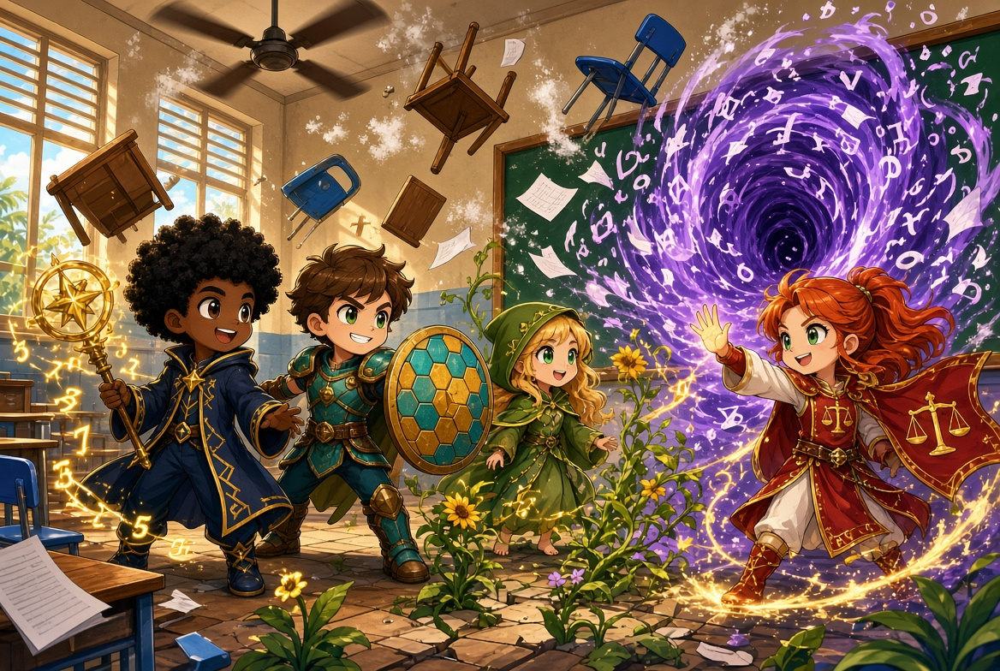

RPG educativo digital
Lógica, matemática e cidadania viram aventura. A turma cria heróis, decide como enfrentar cada desafio e rola o d20 na tela — com o professor conduzindo.

assets/imagens/capa-elarion.jpg
O que é este RPG
Um jogo de interpretação de papéis onde você é o herói da própria aprendizagem. Cada encontro mistura narrativa de fantasia com desafios reais de lógica e matemática — e, como num RPG de mesa, suas ações são decididas na rolagem do dado.
A História
Os quatro Pilares
- Vale do Saber — enigmas, números e o que a Razão sustenta
- Terras Unidas — convivência, divisão justa e a União
- Cidade-Jardim — plantar pensando em quem vem depois
- Salão da Justiça — a Lei que protege o fraco do forte
Como se joga
Um encontro acontece em quatro passos, sempre nesta ordem. O dado não decide se você sabe a matéria — decide em que condições você vai enfrentá-la.
-
1
A cena
Alguém está na sua frente: um NPC com um problema, ou um inimigo com uma provocação. Leia a fala — a resposta costuma estar escondida ali.
-
2
A abordagem
Você escolhe como agir. Deduzir pela lógica, pressionar alguém, pedir ajuda, observar o ambiente. Cada caminho usa um atributo diferente e tem a sua própria dificuldade. Não existe caminho errado — existem riscos diferentes, e a sua classe favorece um deles.
-
3
A rolagem
O d20 rola antes da pergunta, com a dificuldade e cada bônus à vista: nada é escondido de você. Tirar 20 apaga uma alternativa errada; falhar deixa o inimigo agir primeiro. O resultado muda a cena, não só o tamanho do prêmio.
-
4
O desafio
Agora sim a pergunta de conteúdo, enfrentada no terreno que a sorte deixou. Acertar resolve a cena e rende XP e ouro. Errar tem preço.
Determinação
É o quanto você aguenta errar antes de recuar. Cada erro consome pontos — e quando ela zera, seu herói volta ao acampamento, perde ouro e tempo, mas não o progresso. Recuar não é derrota: é a cena terminando de outro jeito.
Inspiração
A segunda chance existe, mas custa. Você ganha Inspiração resolvendo de primeira ou tirando 20 natural, e gasta para rolar o dado de novo. Por isso não é "tente até acertar": é uma decisão sua, com um recurso que acaba.
Ouro e Loja
O ouro compra itens que mudam as regras a seu favor: mais Determinação, uma re-rolagem, bônus no dado, vantagem (dois dados, fica o melhor) ou uma alternativa errada apagada. Gastar agora ou guardar para o chefe é com você.
Se você é professor
Entre como Professor para abrir o Painel do Mestre: lá você escreve a história da campanha, cria encontros com NPCs e inimigos, monta a loja e define os checkpoints da aula. A Mesa ao Vivo é a tela que fica aberta enquanto a turma joga, com o seu roteiro de um lado e o status de cada aluno do outro. Há uma campanha completa pronta para instalar com um clique, se quiser começar jogando.
Entrar como Professor